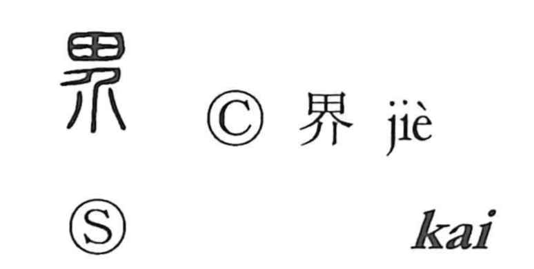

界

Kun: sakai | On: kai
boundary ・ border ・ world
Explanation
界 joins 田, cultivated land, with 介 as the sound element. 介 depicts a person enclosed by armour at the front and back. Those separated surfaces provide an association with division, applied here to the boundaries of fields.
The older writing 畍 places the same elements side by side. 界 arranges them vertically, while 堺 adds 土 to make the connection with land still more explicit. The central meaning is a boundary, a partition, or the act of marking one area off from another.
Once a boundary defines an area, the word can name everything within it: a territory, a sphere of activity, or a world. Buddhist terminology made extensive use of this sense of a realm with its own defining character.